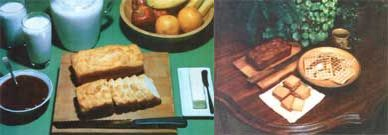

This unusual bread is as quick 'n' easy to make as it is tasty. Just mix 2 tablespoons of sugar into 3 cups of self-rising flour, and then add a 12ounce bottle of beer (stir well while you mix in the brew, and only add about 4 ounces at a time). Pour the batter into three well-greased 3" X 6" pans (use two if you'd like thicker loaves), and "drizzle" 1/2 cup of melted butter over the top. (The butter should form a 1/ 8" -at least-layer over the dough.) Bake this bread for about 50 minutes at 350°F ... and then just try to keep your family from eatin' it all as soon as it comes out of the oven! [MOTHER'S NOTE: One of my recipe taster/testers, Elaine Wolf, baked up a batch of Mrs. Shuttleworth's beer bread, and everybody who had a chance to chow down on the loaves found 'em delicious. Elaine suggests that you could substitute 1 tablespoon of honey for the 2 tablespoons of sugar ... if you also decrease the amount of beer used by 1 tablespoon.]
Homemade graham crackers are a real treat! Simply cut together 4 cups of whole wheat flour and I cup of butter, then add 2 teaspoons of baking powder, 1 egg, and 1/2 cup of honey (or 1/2 cup of hot water and 1 cup of sugar). Roll out the dough (to about 1/4" thick) on a floured board (unbleached white flour is good for this purpose). Then cut it into "cracker-sized" squares, and bake the little snacks for 15 to 20 minutes in a 350°F oven. Keep a close eye on 'em . . . 'cause the crackers brown up fast!
Mmmm-MMM! Here's a "receipt" for hearty wafles from the Rocky Mountains. Start by separating 4 eggs. Beat the whites till they're stiff, set 'em aside, and mix the yolks into 2 cups of whole wheat flour. Add a sprinkle of raisins or sunflower seeds, and then mix in 1 teaspoon of salt and 2 cups (or maybe a little more) of water. Finally, fold in the egg whites, pour the batter into your waffle iron, and just watch everybody wake up for breakfast!
Try this cake for a special cold day dessert. Dice 4 cups of fresh apples (not too finely, now) and mix 'em up with 1 cup of honey. When the apple pieces are coated well, add 1/2 cup of oil, 1 cup of nuts (any kind you like ... except maybe peanuts), and 2 eggs. Then, mix in 2 cups of whole wheat flour, 2 teaspoons of baking powder, 2 teaspoons of cinnamon, and 1 teaspoon of salt. Bake the cake at 350°F for an hour ... or until it shrinks from the edge of the pan. When you taste it, you'll wish that you'd made more!
|
 STAFF PHOTOS |
|
|